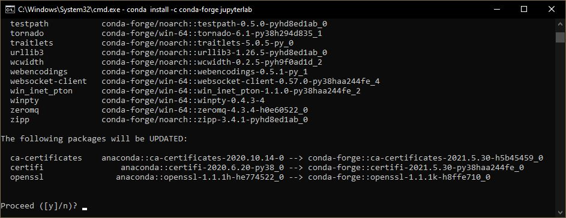
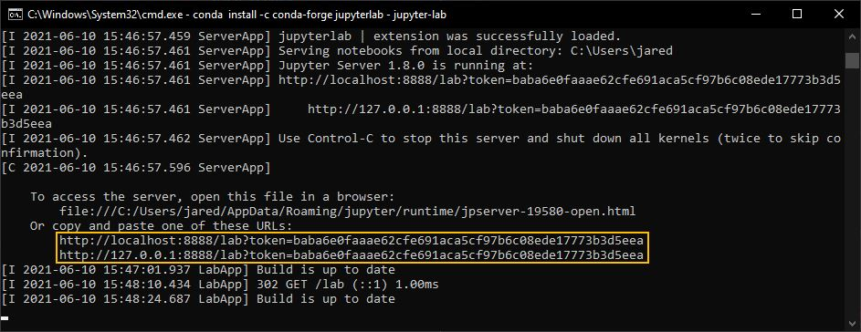
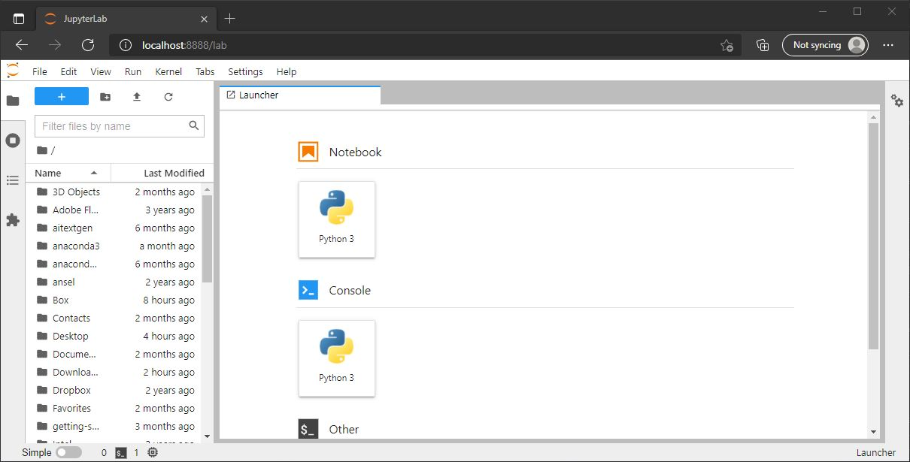

3 Python and Python Tools
3.1 Anaconda (Python)
3.1.1 Introduction
Anaconda is a pre-built environment manager for python. These environments let you keep several separate installations of python on your machine, negating the risk of module versions and incompatibilities ruining your project. The environment are also easily exportable, letting you to easily share them with collaborators.
3.1.2 Anaconda on Windows
To install Anaconda on windows, first navigate to their site, select products, then individual edition.

Scroll down on this page and near the bottom you will be able to select your preferred download (or click the download button). Most modern Windows computers can make use of the 64-Bit installer.

Once the download has finished, run the executable.

The setup will walk you through the process of installing Anaconda on your computer. First hit the Next button.

On the following screen hit I Agree.

Next choose whether you want to install Anaconda for everyone, or just yourself. This doesn’t matter if you are the only one that uses your computer.

Select where you would like to install Anaconda. In most cases the default is fine.

On the Advanced Option page, it is recommended you leave both these options unchecked unless you have a reason not to. Hit Install!

Anaconda will then start installing on your system. When it is finished, press Next.

One the next page it will prompt you to download PyCharm. PyCharm is an interactive environment some use to write their python code. You do not need to install this now. Press Next to continue. On the next page you can choose to view tutorials if you would like, but your install is completed!

3.1.3 Anaconda on Mac
3.1.4 Verifying your install
To verify Anaconda is working on your system, launch the Anaconda Navigator from your programs menu. This should start the main navigator window seen below.

From here, click on the Environments tab in the left sidebar. On the next screen, mouse over an environment and press the play button, and select Open with Python. If this is your first time using python, you may only see one environment called base (root) in the environments pane.

If a python window successfully launches, you should be good to go!

3.1.5 Installation troubleshooting
If you are not able to successfully install Anaconda on your own, please attend DataLab’s Virtual Office Hours. Click here for more information and to receive a Zoom link.
3.2 JupyterLab
3.2.1 Introduction
Jupyter Notebooks are a common interactive development environment for python, and they can also run R code. If you are familiar with R Studio notebooks, they operate in a similar fashion. Jupyter notebooks run by hosting a web server on your computer, then letting you connect to it through an internet browser.
3.2.2 Jupyter from the terminal
Regardless of your operating system, the easiest way to install jupyter notebooks is from the terminal. Start a terminal window using the conda or venv environment of your choice. Once activated, enter conda install -c conda-forge jupyterlab if on conda, or pip install jupyterlab otherwise. It will ask for confirmation that you want to install the listed components. Input Y and press enter to continue.

The terminal will then start downloading and installing all the components, this can take some time. once it has finished you can start jupyter by entering jupyter-lab. Your terminal will start hosting a jupyter lab instance, and should open a tab in your preferred browser. You will not be able to use this terminal for other purposes while jupyter is running, but you can always start another. If a tab does not auto start, you can use the provided links in the terminal to open one.

3.2.3 Verifying your install
If you can open jupyter lab in a tab, you should be all set!

3.2.4 Installation troubleshooting
If you are not able to successfully install Jupyter Notebooks on your own, please attend DataLab’s Virtual Office Hours. Click here for more information and to receive a Zoom link.
3.3 Python Modules
3.3.1 Introduction
Python modules are extensions to the basic capabilities of Python. You can install modules from the terminal where you call Python. The same process will apply regardless of your operating system.
3.3.2 Installing Modules using Conda
If you are using Anaconda, it is recommended you install modules from conda sources to ensure compatibility. First, start a terminal using the Python environment you want to install the module in.
(Optional) If you are using Anaconda, use the Anaconda Navigator to launch a terminal of your chosen environment.

Once you are in the terminal of your chosen environment, you can install any module you know the name of using conda install <module name>.

conda will then search its repositories for a module matching the name you provided. Note that if you are looking for a module python said was missing in an error code, it may not be the same name you need to use when installing! You will need to search online if the install fails because it says there is no module of that name.
3.3.3 Installing Modules using Pip
If you are not using conda, or conda could not find a module, you will need to use pip to install modules. First, start a terminal using the Python environment you want to install the module in.
Once you are in the terminal of your chosen environment, you can install any module you know the name of using pip install <module name>.

pip will then search its repositories for a module matching the name you provided. Note that if you are looking for a module python said was missing in an error code, it may not be the same name you need to use when installing! You will need to search online if the install fails because it says there is no module of that name.
3.3.4 Verifying your install
Regardless of your installation method, you can test if a module was successfully installed by doing the following. First, activate Python by entering python in the terminal which is in the environment you installed the module into. You know you are in python if you see the welcome message and your input changes into >>>.

Once you have activated python, you can test if your module was installed by trying to import it. To import a module enter import <module name> in python.

If you did not get an error, your module is successfully installed! You can also give modules an alias when importing for easier use.

3.3.5 Installation troubleshooting
If you are not able to successfully install OpenRefine on your own, please attend DataLab’s Virtual Office Hours. Click here for more information and to receive a Zoom link.